전기산업기사 (2009-03-01 기출문제)
1과목: 전기자기학
1. 평균 반지름 10Cm의 환상 솔레노이드에 5A의 전류가 흐를 때 내부 자계가 1600AT/m 이었다. 권수는 얼마인가?
- 180회
- 190회
- 200회
- 210회
(정답률: 66%)

2. 반지름 a, b( b>a )[m]인 동심원통 전극 사이에 도전율 σ[s/m]의 손실유전체를 채우면 단위 길이 당 저항은 몇[Ω/m]인가?(오류 신고가 접수된 문제입니다. 반드시 정답과 해설을 확인하시기 바랍니다.)
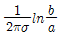
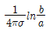
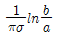
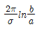
(정답률: 61%)
3. 합성수지 절연체에 5 × 103V/m의 전계를 가했을 때, 이 때의 전속밀도를 구하면 약 몇[C/m2]이 되는가? (단,εs=10 이다)
- 1.1 × 10-4
- 2.2 × 10-5
- 3.3 × 10-6
- 4.4 × 10-7
(정답률: 63%)
4. 내구의 반지름 10 Cm, 외구의 반지름 20Cm인 동심 구도체의 정전 용량은 약 몇[pF]인가?
- 16
- 18
- 20
- 22
(정답률: 54%)
5. 다음 중 전자석의 재료로서 적당한 것은?
- 잔류자기는 크고 보자력은 작아야 한다.
- 잔류자기와 보자력이 모두 커야한다.
- 잔류자기와 보자력이 모두 작아야 한다.
- 잔류자기는 작고, 보자력은 커야한다.
(정답률: 71%)
6. 솔레노이드의 자기 인덕턴스는 권수 N 과 어떤 관계를 갖는가?
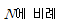
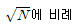
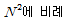
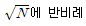
(정답률: 74%)
7. 진공 중에 반경 2 [Cm]인 도체구 A와 내외 반경이 4[Cm] 및 5[Cm]인 도체구 B를 동심으로 놓고 도체구 A에 QA=2 ×10-10[C]의 전하를 대전시키고 도체구 B의 전하는 0[C]으로 했을 때 도체구 A의 전위는 몇[V]인가?
- 36
- 45
- 81
- 90
(정답률: 45%)
8. 그림과 같이 반지름 2m, 권수 100회인 원형 코일에 1.5A 가 흐른다면 중심점 O의 자계의 세기는 몇[AT/m]인가?
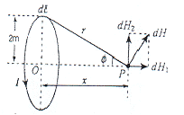
- 30
- 37.5
- 75
- 1⑤
(정답률: 69%)
9. 진공중의 MKS 유리화 단위계에서 정전하간의 정전력
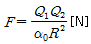
, 자하간의 자기력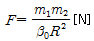
및 전자계간의 전자력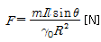
이다. 상수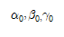
간의 관계식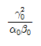
의 값은?(오류 신고가 접수된 문제입니다. 반드시 정답과 해설을 확인하시기 바랍니다.)- 3 × 108
- 3 × 1010
- 9 × 1016
- 9 × 1020
(정답률: 48%)
10. A = -7i-j, B = -i3-4j 의 두 벡터가 이루는 각도는?
- 30°
- 45°
- 60°
- 90°
(정답률: 72%)
11. 두 종류의 금속으로 된 폐회로에 전류를 흘리면 양 금속에서 한쪽은 온도가 올라가고 다른 쪽은 온도가 내려가는 현상은?
- 볼타 효과
- 펠티에 효과
- 톰슨 효과
- 지벡 효과
(정답률: 73%)
12. 그림과 같은 유전속 분포에서ε1 과ε2 의 관계는?
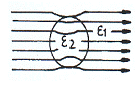
- ε1 = ε2
- ε1 > ε2
- ε1 < ε2
- ε1 = ε2 = 0
(정답률: 61%)
13. 전류 I[A]가 반지름 a[m]의 원주를 균일하게 흐를 때 원주 내부의 중심에서 r[m] 떨어진 원주 내부 점의 자계의 세기는 몇[AT/m]인가?
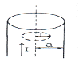
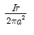
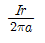
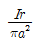
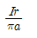
(정답률: 47%)
14. 공기 중에서 12[Wb/m2]인 평등 자계 내에 길이 80[Cm]인 도선을 자계에 대하여 30°의 각을 이루는 위치에 두었을 때, 24N 의 힘을 받았다면 도선에 흐르는 전류는 몇[A] 인가?
- 2
- 3
- 4
- 5
(정답률: 53%)
15. 그림과 같이 진공 중에 서로 평행인 무한 길이 두 직선 도선 A, B 가 d[m] 떨어져 있다. A, B의 선전하 밀도를 각각 λ1[C/m],λ2[C/m] 라 할 때, A로부터 d/3[m]인 점의 전계의 세기가 0 이었다면λ1과 λ2의 관계는?
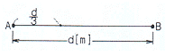
- λ2 = 1/2λ1
- λ2 = 2λ1
- λ2 = 3λ1
- λ2 = 9λ1
(정답률: 54%)
16. 다음 물질 중 반 자성체는?
- 백금
- 구리
- 니켈
- 알루미늄
(정답률: 62%)
17. 플래밍의 왼손법칙에서 왼손의 엄지, 인지, 중지의 방향에 해당 되지 않는 것은?
- 전압
- 전류
- 자속밀도
- 힘
(정답률: 73%)
18. 자장 중에서 도선에 발생되는 유기 기전력의 방향은 어떤 법칙에 의하여 설명 되는가?
- 페러데이의 법칙
- 앙페르의 오른나사 법칙
- 렌츠의 법칙
- 가우스의 법칙
(정답률: 66%)
19. 자유공간에서 주파수 5MHz]의 파장은 몇[m]인가?
- 5
- 15
- 60
- 100
(정답률: 63%)
20. 고유저항 p[Ω ㆍ m] 한변의 길이가 r[m]인 정육면체의 저항 [Ω]은?
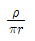
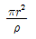
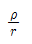
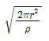
(정답률: 75%)
2과목: 전력공학
21. 다음 중 전력 계통의 안정도 향상 대책으로 볼 수 없는 것은?
- 직렬 콘덴서 설치
- 병렬 콘덴서 설치
- 중간 개폐소 설치
- 고속차단, 재폐로 방식 채용
(정답률: 65%)
22. 공기의 파열극한 전위경도는 정현파 교류의 실효치로 약 몇[KV/Cm]인가?
- 21
- 25
- 30
- 33
(정답률: 61%)
23. 전선의 장력이 1500[kgf] 일 때, 지선에 걸리는 장력은 몇[kgf] 인가?
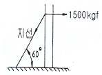
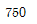
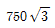
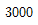
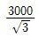
(정답률: 48%)
24. 30일간의 최대수용전력이 200kW, 소비 전력량이 72000kWh 일 때, 월 부하율은 몇[%]인가?
- 30
- 40
- 50
- 60
(정답률: 50%)
25. 다음 중 원방감시제어(SCADA)의 기능과 관계가 먼 것은?
- 원격 제어 기능
- 원격 측정 기능
- 부하 조정 기능
- 자동 기록 기능
(정답률: 63%)
26. 송전선로의 중성점을 접지하는 주된 목적은?
- 동량의 절약
- 송전용량의 증가
- 전압 강하의 감소
- 이상 전압의 억제
(정답률: 78%)
27. 전력용 퓨즈는 주로 어떤 전류의 차단을 목적으로 사용 하는가?
- 충전 전류
- 부하 전류
- 단락 전류
- 지락 전류
(정답률: 73%)
28. 그림에서 계기
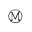
이 지시하는 것은?(문제 복원 오류로 그림파일이 없습니다. 정확한 내용을 아시는분 께서는 관리자 메일로 부탁 드립니다. 정답은 2번입니다.)- 정상 전류
- 영상 전압
- 역상 전압
- 정상 전압
(정답률: 73%)
29. 송전 선로를 연가 하는 주된 목적은?
- 페란티 효과의 방지
- 직격뢰의 방지
- 선로 정수의 평형
- 유도뢰의 방지
(정답률: 77%)
30. 전압 66000V, 주파수 60Hz, 길이 7km 1회선의 3상 지중 전선로에서 3상 무부하 충전 용량은 약 몇[kVA] 인가? (단, 케이블의 심선 1선1km의 정전 용량은 0.4㎌/㎞라 한다.)
- 2560
- 4600
- 7970
- 13800
(정답률: 37%)
31. 다음 중 보호 계전기가 구비하여야 할 조건으로 거리가 먼 것은?
- 동작이 정확하고 감도가 예민할 것
- 열적, 기계적 강도가 클 것
- 조정 범위가 좁고 조정이 쉬울 것
- 고장 상태를 신속하게 선택할 것
(정답률: 66%)
32. 가공 전선로의 전선 진동을 방지하기 위한 방법으로 옳지 않은 것은?
- 토셔널 댐퍼(torsional damper)의 설치
- 스프링 피스톤 댐퍼와 같은 진동 제지권을 설치
- 경동선을 ACSR로 교환
- 클램프나 전선 접촉기 등을 가벼운 것으로 바꾸고 클램프 부근에 적당히 전선을 첨가
(정답률: 70%)
33. 배전 전압을 √3배 하면 동일한 전력 손실률로 보낼 수 있는 전력은 몇 배가 되는가?
- √3
- 3/2
- 3
- 2√3
(정답률: 64%)
34. 유역면적 550km2인 어떤 하천의 1년간 강수량이 1500mm이다. 증발침투 등의 손실을 30%라고 하면, 1년을 통하여 평균적으로 흐른 유량은 약 몇[m3/s] 이겠는가?
- 18.3
- 21.3
- 24.2
- 26.2
(정답률: 36%)
35. 송전선로에서 4단자 정수 A, B, C, D 사이의 관계는?
- BC - AD = 1
- AC - BD = 1
- AB - CD = 1
- AD - BC = 1
(정답률: 73%)
36. 그림과 같이 임피던스 Z1,Z2,Z3인 송전선이 접속된 선로의 A쪽에서 전압파 E가 진행해 왔을 때 접속점 B에서 무반사로 되기 위한 조건은?
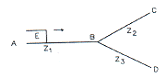
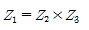
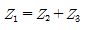
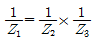
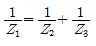
(정답률: 60%)
37. 전력 계통에서 이상 전압의 방지 대책으로 볼 수 없는 것은?
- 철탑 접지 저항의 저감
- 가공 송전 선로의 피뢰용으로서의 가공 지선에 의한 뇌차폐
- 기기 보호용으로서의 피뢰기 설치
- 복도체 방식 채택
(정답률: 62%)
38. 초고압용 차단기에 사용되는 개폐 저항기의 목적은?
- 차단 속도 증진
- 개폐 서어지 이상 전압 억제
- 차단 전류 감소
- 차단 전류의 역률 개선
(정답률: 67%)
39. 용량 25000kVA, 임피던스 10%인 3상 변압기가 2차 측에서 3상 단락 되었을 때, 단락 용량은 몇[MVA]인가?
- 225
- 250
- 275
- 433
(정답률: 60%)
40. 전력이 같고, 단면적과 긍장이 같을 때, 전압 변동률 [%]은?
- 전압에 비례한다.
- 전압의 제곱에 비례한다.
- 전압에 반비례한다.
- 전압의 제곱에 반비례한다.
(정답률: 51%)
3과목: 전기기기
41. 다음 전동력 응용기기에서 GD2의 값이 적은 것이 바람직한 장치는?
- 압연기
- 엘리베이터
- 송풍기
- 냉동기
(정답률: 76%)
42. 부하 전류가 50[A] 일 때, 단자 전압이 100[V]인 직류 직권 발전기의 부하 전류가 70[A] 로 되면 단자 전압은 몇[V]가 되겠는가? (단, 전기자 저항 및 직권계자 권선의 저항은 각각 0.1[Ω]이고, 전기자 반작용과 브러시의 접촉 저항 및 자기 포화는 모두 무시한다.)
- 110
- 114
- 140
- 154
(정답률: 42%)
43. 단상 유도전압조정기와 3상 유도전압조정기의 비교 설명으로 옳지 않은 것은?
- 모두 회전자와 고정자가 있으며 한편에 1차 권선을 다른 편에 2차 권선을 둔다.
- 모두 입력전압과 이에 대응한 출력 전압 사이에 위상차가 있다.
- 단상유도전압 조정기는 단락 권선이 필요하나 3상에는 필요 없다.
- 모두 회전자의 회전각에 따라 조정된다.
(정답률: 47%)
44. PWM 인버터에서 나타나는 고조파의 영향이 아닌 것은?
- 손실
- 기계적인 마찰과 관성
- 소음과 진동
- 토크 맥동
(정답률: 52%)
45. 직류 분권 발전기에서 무부하 포화곡선이
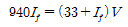
인 식으로 주어졌을 때 계자 권선의 저항이 10[Ω]이다. 이때 정상 전압은 몇[V]인가?- 280
- 310
- 610
- 720
(정답률: 45%)
46. 변압기의 원리는?
- 전자 유도 작용을 이용
- 정전 유도 작용을 이용
- 자기 유도 작용을 이용
- 플레밍의 오른손 법칙을 이용
(정답률: 59%)
47. 정격전압 100[V], 전기자 전류 50[A] 일 때, 1500[rpm]인 직류 분권 전동기의 무부하 속도는 약 몇[rpm]인가? (단, 전기자 저항은 0.1[Ω]이고, 전기자 반작용은 무시한다.)
- 1382
- 1421
- 1579
- 1623
(정답률: 53%)
48. 변압기의 철손을 알 수 있는 시험은?
- 부하 시험
- 무부하 시험
- 단락 시험
- 유도 시험
(정답률: 58%)
49. 다음 중 유도 전동기의 속도 제어법이 아닌 것은?
- 2차 저항법
- 2차 여자법
- 1차 저항법
- 주파수 제어법
(정답률: 62%)
50. 다음 중 동기 전동기의 난조 방지에 가장 유효한 것은?
- 자극수를 적게 한다.
- 회전자의 관성을 크게 한다.
- 자극면에 제동 권선을 설치한다.
- 동기 리액턴스 xx를 작게 하고 동기 화력을 크게 한다.
(정답률: 73%)
51. 변압기의 개방시험으로 측정 할 수 없는 것은?
- 무부하 전류
- 철손
- 여자 어드미턴스
- 임피던스 전압
(정답률: 41%)
52. 전기자 저항이 0.4[Ω]이며, 단자 전압이 200[V], 부하 전류가 46[A], 계자 전류가 4[A]인 직류 분권 발전기의 유기 기전력은 몇[V]인가?
- 180
- 220
- 225
- 240
(정답률: 65%)
53. 전압 변동율이 작은 동기 발전기는?
- 전기자 반작용이 크다.
- 동기 리액턴스가 크다.
- 단락비가 크다.
- 값이 싸다.
(정답률: 63%)
54. 전압 정류의 역할을 하는 것은?
- 보극
- 탄소
- 보상권선
- 리액턴스 코일
(정답률: 56%)
55. 3상 권선형 유도전동기의 속도 제어를 위해서 2차 여자법을 사용하고자 할 때, 그 방법은?
- 1차 권선에 가해주는 전압과 동일한 전압을 회전자에 가한다.
- 직류 전압을 3상 일괄해서 회전자에 가한다.
- 회전자 기전력과 같은 주파수의 전압을 회전자에 가한다.
- 회전자에 저항을 넣어 그 값을 변화시킨다.
(정답률: 51%)
56. 리액터 기동방식에 리액터 대신에 저항기를 사용한 것으로서 전동기의 전원측에 직렬로 저항을 접속하고, 전원 전압을 낮게 감압하여 기동한 후 서서히 저항을 감소시켜 가속하고, 전속도에 도달하면 이를 단락하는 방법에 해당 되는 것은?
- 직입 기동방식
- Y - △ 기동
- 1차 저항 기동 방식
- 기동 보상기에 의한 기동
(정답률: 44%)
57. 동기 발전기의 병렬 운전에 필요한 조건이 아닌 것은?
- 기전력의 주파수가 같을 것
- 기전력의 위상이 같을 것
- 임피던스 및 상회전 방향과 각 변위가 같을 것
- 기전력의 크기가 같을 것
(정답률: 67%)
58. 동기기의 안정도 증진법은 다음 중 어느 것인가?
- 동기화 리액턴스를 작게 할 것
- 회전자의 플라이휠 효과를 작게 할 것
- 역상, 영상 임피던스를 작게 할 것
- 단락비를 작게 할 것
(정답률: 62%)
59. 변압기에서 생기는 와류손은 철심 두께와 어떤 관계가 있는가?
- 철심 두께의 1/2승에 비례
- 철심 두께에 비례
- 철심 두께의 2승에 비례
- 철심 두께의 3승에 비례
(정답률: 58%)
60. 3상 유도전동기에서 비례추이를 하지 않는 것은?(오류 신고가 접수된 문제입니다. 반드시 정답과 해설을 확인하시기 바랍니다.)
- 효율
- 역율
- 1차 전류
- 동기 와트
(정답률: 50%)
4과목: 회로이론
61. Z=8+j6[Ω]인 평형 Y부하에 선간 전압이 200[V]인 대칭 3상 전압을 가할 때 선전류는 약 몇[A]인가?
- 0.08
- 11.5
- 17.8
- 19.5
(정답률: 66%)
62.
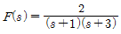
의 역 라플라스 변환은?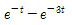
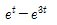
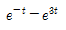
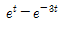
(정답률: 66%)
63. 어떤 회로망의 4단자 정수가 A=8, B=j2, D=3+j2 이면 회로망의 C는 얼마인가?
- 2 + j3
- 3 +j3
- 24 + j14
- 8 - j11.5
(정답률: 61%)
64. R=10[Ω], L=0.045[H]의 직렬 회로에 실효값 140[V], 주파수 25[Hz]의 정현파 교류 전압을 가했을 때, 임피던스[Ω]의 크기는 약 얼마인가?
- 17.25
- 15.31
- 12.25
- 10.41
(정답률: 55%)
65. 비정현파에 있어서 정현 대칭의 조건은?
- f(t) = f(-t)
- f(t) = -f(t)
- f(t) = -f(-t)
- f(t) = -f(t+180)
(정답률: 59%)
66. 어떤 정현파 교류의 실효값이 314 [V]일 때, 평균값은 약 몇[V]인가?
- 142
- 283
- 365
- 382
(정답률: 63%)
67. 비정현파
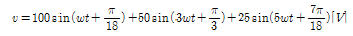
인 경우 실효치 전압[V]은?- 71
- 81
- 91
- 101
(정답률: 58%)
68. 그림과 같은 4단자 회로의 4단자 정수 중 D의 값은?
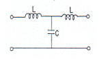
- 1-w2LC
- jwL(2-w2LC)
- jwC
- jwL
(정답률: 54%)
69. 다음과 같은 회로가 정저항 회로로 되기 위해서는 C를 몇[㎌]로 하면 좋은가? (단, R=10[Ω], L=100[mH])
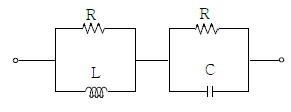
- 1
- 10
- 100
- 1000
(정답률: 53%)
70. 그림에서 저항 R이 접속되고 여기에 3상 평형 전압이 가해져 있다. 지금 X표의 곳에서 1선이 단선되었다 하면, 소비 전력은 처음의 몇배로 되는가?
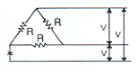
- 1.0
- 0.7
- 0.5
- 0.25
(정답률: 34%)
71. 회로에서 저항 0.5[Ω]에 걸리는 전압[V]은?
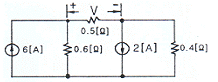
- 0.62
- 0.93
- 1.47
- 1.68
(정답률: 42%)
72. 그림과 같은 단위 계단 함수는?
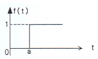
- u(t)
- u(t-a)
- u(a-t)
- -u(t-a)
(정답률: 58%)
73. 코일의 권수 N=1000, 저항 R=20[Ω]이다. 전류 I=10 [A]이 흐를 때, 자속 ø=3×10-2[Wb]이다. 이 회로의 시정수는 얼마인가?
- 0.15
- 0.4
- 3.0
- 4.0
(정답률: 58%)
74. 이상적인 전압원과 전류원의 내부저항[Ω]은 각각 얼마인가?
- 전압원과 전류원의 내부저항은 모두 0이다.
- 전압원의 내부저항은 ∞이고, 전류원의 내부저항은 0이다.
- 전압원과 전류원의 내부저항은 모두 ∞이다.
- 전압원의 내부저항은 0이고, 전류원의 내부저항은 ∞이다.
(정답률: 58%)
75. 그림과 같은 파형의 교류전압 v와 전류 I 간의 등가역률은 얼마인가? (단,
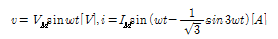
이다.)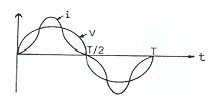
- √3/2
- √4/2
- 0.8
- 0.9
(정답률: 43%)
76. R=40[Ω], L=80[mH]의 코일이 있다. 이 코일에 100[V], 60[Hz]의 전압을 가할 때, 소비되는 전력[W]은?
- 200
- 160
- 120
- 100
(정답률: 47%)
77. 를 라플라스 변환하면?
(정답률: 41%)
78. 그림과 같은 회로에서 인가 전압에 의한 전류 j를 입력, V0를 출력이라 할 때, 전달 함수는?
(정답률: 49%)
79. R-C 직렬회로의 과도상태 현상에 관한 설명 중 옳게 표현된 것은?
- 과도 전류값은 RC값에 상관이 없다.
- RC값이 클수록 회로의 과도값도 빨리 사라진다.
- RC값이 클수록 과도 전류값은 천천히 사라진다.
- 의 값이 클수록 과도 전류값은 천천히 사라진다.
(정답률: 62%)
80. 한 상의 임피던스 Z= 6+j8[Ω]인 평형 Y부하에 평형 3상 전압 200[V]를 인가할 때 무효전력 [Var]은 약 얼마인가?
- 1330
- 1848
- 2381
- 3200
(정답률: 56%)
5과목: 전기설비기술기준 및 판단 기준
81. 옥내에 시설하는 전동기에는 전동기가 소손될 우려가 있는 과전류가 생겼을 때 자동적으로 이를 저지하거나 이를 경보하는 장치를 시설하여야 하는데, 단상 전동기인 경우 전원측 전로에 시설하는 과전류 차단기의 정격 전류가 몇[A]이하이면 이 과부하 보호장치를 시설하지 않아도 되는가? (단, 단상 전동기는 KS C 4204(2003)의 표준 정격의 것을 말한다.)
- 10
- 15
- 30
- 50
(정답률: 43%)
82. 정격 전류 30[A]의 전동기 1대와 정격 전류 5[A]의 전열기 2대에 공급하는 저압 옥내 간선을 보호할 과전류 차단기의 정격 전류의 최대값은 몇[A]인가?
- 40
- 70
- 100
- 120
(정답률: 38%)
83. 저압 연접 인입선은 인입선에서 분기하는 점으로부터 몇[m]를 초과하는 지역에 미치지 아니하도록 시설하여야 하는가?
- 10
- 20
- 100
- 200
(정답률: 50%)
84. 옥내에 시설하는 관등회로의 사용전압이 1000[V]를 넘는 방전등 공사에 사용되는 네온 변압기 외함의 접지공사로 알맞은 것은?(관련 규정 개정전 문제로 여기서는 기존 정답인 3번을 누르면 정답 처리됩니다. 자세한 내용은 해설을 참고하세요.)
- 1종 접지 공사
- 2종 접지 공사
- 3종 접지 공사
- 특별 3종 접지 공사
(정답률: 61%)
85. 가요 전선관 공사에 있어서 저압 옥내 배선 시설에 맞지 않는 것은?
- 전선은 절연 전선일 것
- 가요 전선관 안에는 전선에 접속점이 없을 것
- 1종 금속제 가요전선관의 두께는 0.8mm 이상일 것
- 일반적으로 가요 전선관은 3종 금속제 가요 전선관 일 것
(정답률: 35%)
86. 1차 22900V, 2차 3300V의 변압기를 옥외에 시설할 때 구내에 취급자 이외의 사람이 들어가지 아니하도록 울타리를 시설하려고 한다. 이때 울타리의 높이는 몇[m]이상으로 하여야 하는가?
- 2
- 3
- 4
- 5
(정답률: 45%)
87. 강제 배류기의 시설기준에 대한 설명으로 옳지 않은 것은?
- 귀선에서는 강제 배류기를 거쳐 금속제 지중 관로로 통하는 전류를 저지하는 구조로 할 것
- 강제 배류기를 보호하기 위하여 적정한 과전류 차단기를 시설 할 것
- 강제 배류기용 전원장치의 변압기는 절연 변압기를 시설하고, 1,2차측 전로에는 개폐기 및 과전류 차단기를 각 극에 시설한 것일 것
- 강제 배류기는 제 3종 접지공사를 한 금속제 외함 기타 견고한 함에 넣어 시설하거나 사람이 접촉할 우려가 없도록 시설할 것
(정답률: 53%)
88. 사용 전압이 60000[V] 이하인 특별고압 가공 전선로는 상시 정전 유도작용 에 의한 통신상의 장해가 없도록 시설하기 위하여 전화선로의 길이 12km 마다 유도 전류는 몇[㎂]를 넘지 않도록 하여야 하는가?
- 1
- 2
- 3
- 5
(정답률: 59%)
89. 특별고압 가공전선이 저고압 가공전선 등과 제 2차 접근 상태로 시설되는 경우 사용전압이 35000V 이하인 특별 고압 가공전선과 저고압 가공전선 등 사이에 무엇을 시설하는 경우에 특별고압 가공전선로를 제 2종 특별고압 보안공사에 의하지 아니 하여도 되는가? (단, 애자장치에 관한 부분에 한한다.)
- 접지설비
- 보호망
- 차폐장치
- 전류제한장치
(정답률: 56%)
90. 특별고압 가공전선과 가공약전류 전선 사이에 시설하는 보호망에서 보호망을 구성하는 금속선 상호간의 간격은 가로 및 세로를 각각 몇[m] 이하로 시설하여야 하는가?
- 0.75
- 1
- 1.25
- 1.5
(정답률: 45%)
91. 3상 4선식 22.9kV 중성점 다중 접지 전로의 절련 내력 시험 전압은 최대 사용 전압의 몇 배의 전압인가?
- 0.64배
- 0.72배
- 0.92배
- 1.25배
(정답률: 62%)
92. 저압의 전선로 중 절연 부분의 전선과 대지간 및 전선의 심선 상호간의 절연 저항에 대한 기준으로 옳은 것은?
- 사용 전압에 대한 누설 전류가 최대 공급 전류의 1/1200을 넘지 않아야 한다.
- 사용 전압에 대한 누설 전류가 최대 공급 전류의 1/2000을 넘지 않아야 한다.
- 사용 전압에 대한 누설 전류가 부하 전류의 1/1200을 넘지 않아야 한다.
- 사용전압에 대한 누설 전류가 부하 전류의 1/2000을 넘지 않아야 한다.
(정답률: 50%)
93. 다음 중 “지중 관로”에 포함되지 않는 것은?
- 지중 광섬유 케이블 선로
- 지중 약전류 전선로
- 지중 전선로
- 지중 레일 선로
(정답률: 65%)
94. 그림은 전력선 반송 통신용 결합 장치의 보안장치 이다. 그림에서 DR은 무엇인가?
- 접지형 개폐기
- 결합 필터
- 방전갭
- 배류 선륜
(정답률: 47%)
95. 시가지에 시설하는 154kV 가공 전선로를 도로와 제 1차 접근 상태로 시설하는 경우, 전선과 도로와의 이격 거리는 몇[m] 이상이어야 하는가?
- 4.4
- 4.8
- 5.2
- 5.6
(정답률: 56%)
96. 3300V 고압 가공 전선로를 교통이 번잡한 도로를 횡단하여 시설하는 경우에는 지표상 높이를 몇[m] 이상으로 하여야 하는가?
- 5
- 5.5
- 6
- 6.5
(정답률: 47%)
97. 옥내 배선의 사용 전압이 200V 인 경우에 이를 금속관 공사에 의하여 시설 하려고 한다. 다음 중 옥내배선의 시설로 옳은 것은?
- 전선은 경동선으로 4mm의 단선을 사용하였다.
- 전선은 옥외용 비닐절연전선을 사용하였다.
- 콘크리트에 매설하는 전선관의 두께는 1.0mm를 사용 하였다.
- 금속관에는 제 3종 접지공사를 하였다.
(정답률: 58%)
98. 접지공사의 특례와 관련하여 특별 제 3종 접지공사를 하여야 하는 금속체와 대지간의 전기 저항치가 몇[Ω]이하인 경우에는 특별 제 3종 접지 공사를 한 것으로 보는가?(관련 규정 개정전 문제로 여기서는 기존 정답인 2번을 누르면 정답 처리됩니다. 자세한 내용은 해설을 참고하세요.)
- 3
- 10
- 50
- 100
(정답률: 60%)
99. 전선 기타의 가섭선 주위에 두께 6mm의 빙설이 부착된 상태에서 을종 풍압하중은 구성재의 투영면적 1m2당 몇[Pa]을 기초로 하여 계산하는가?
- 333
- 372
- 588
- 666
(정답률: 35%)
100. 수소 냉각식의 발전기 조상기에서 발전기안 또는 조상기의 수소의 순도가 몇[%] 이하로 저하한 경우에는 이를 조정하는 장치를 시설하여야 하는가?
- 15
- 85
- 125
- 230
(정답률: 70%)
B = μ₀ * n * I
여기서 B는 자기장의 세기, μ₀는 자유공간의 유도율(4π × 10^-7), n은 권수, I는 전류이다.
따라서 n은 다음과 같이 구할 수 있다.
n = B / (μ₀ * I)
문제에서 주어진 값에 대입하면,
n = 1600 / (4π × 10^-7 × 5) ≈ 203.2
따라서 권수는 약 203회이다. 그러나 보기에서는 200회가 정답으로 주어졌다. 이는 근사치를 사용하여 반올림한 결과이다. 따라서 정답은 200회이다.